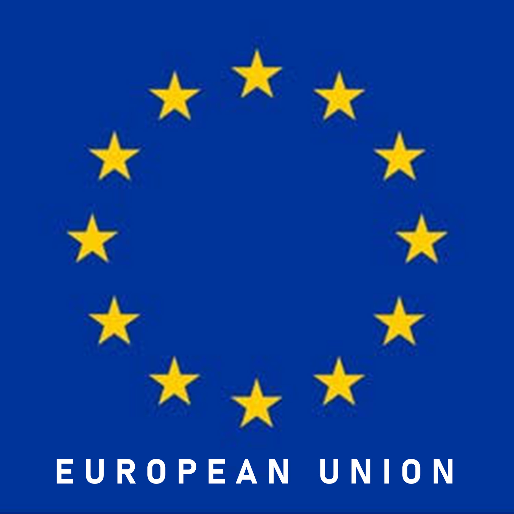
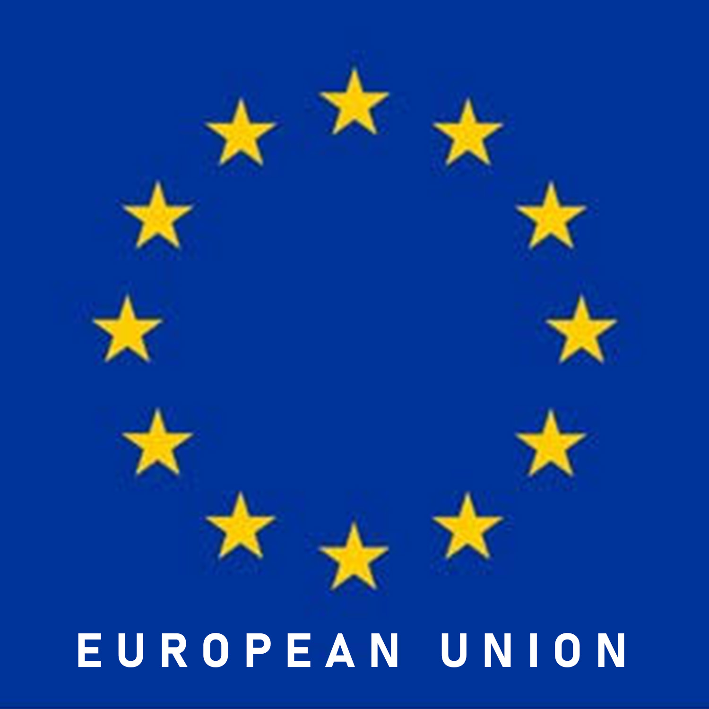
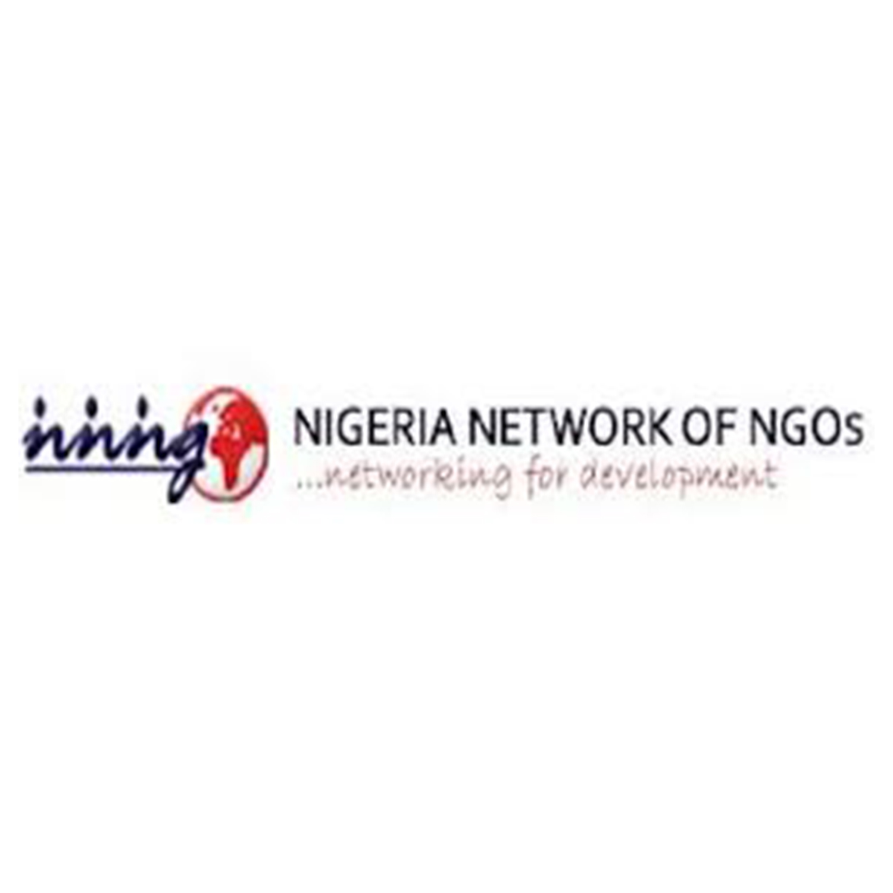
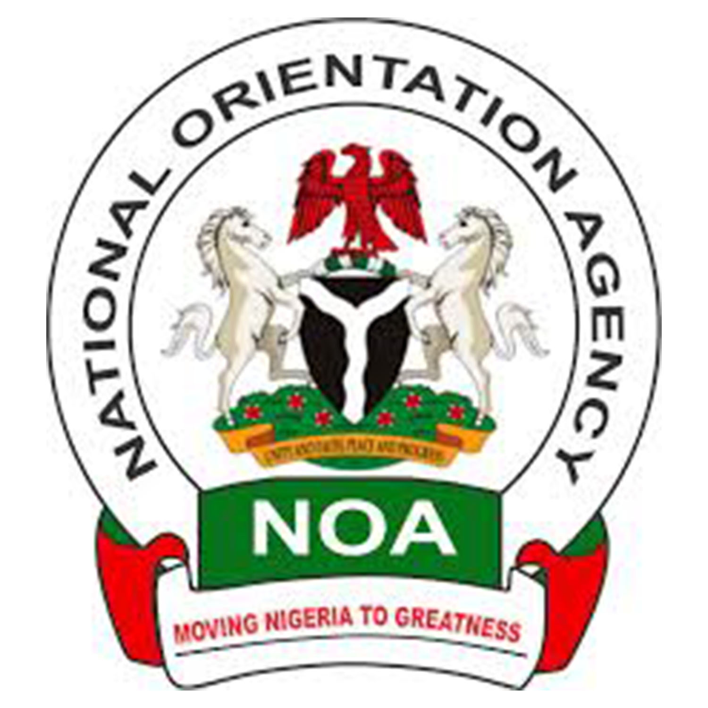
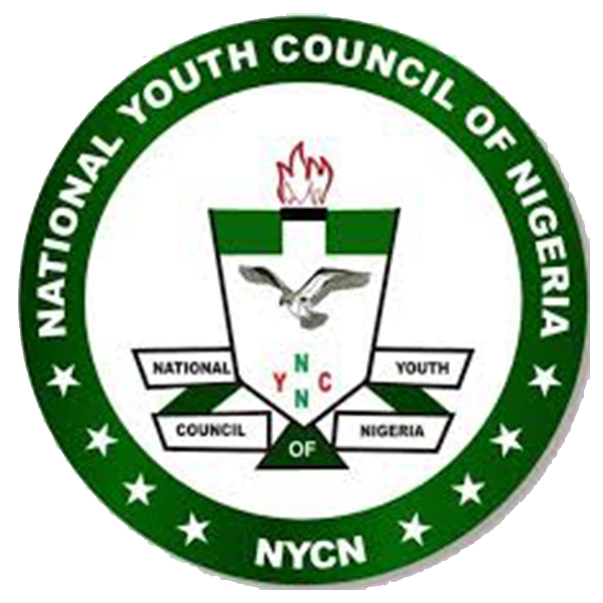
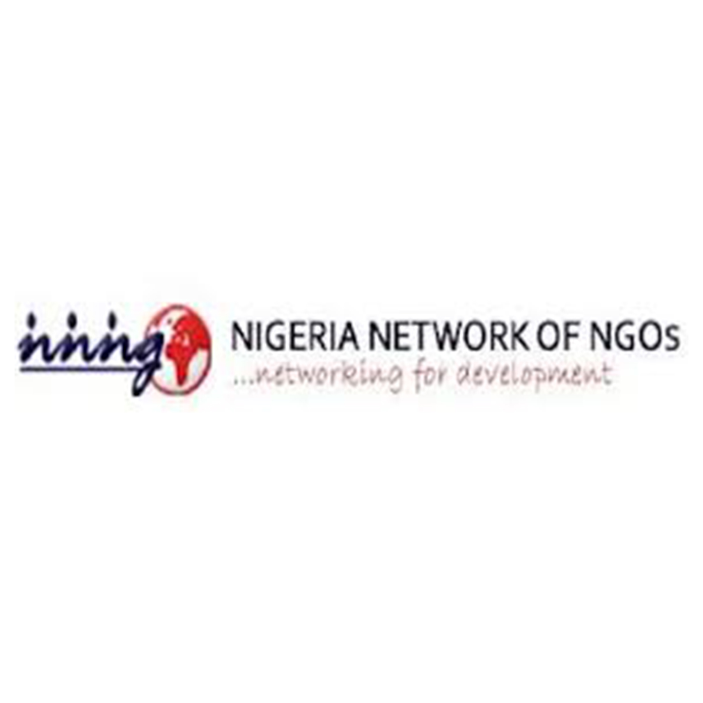
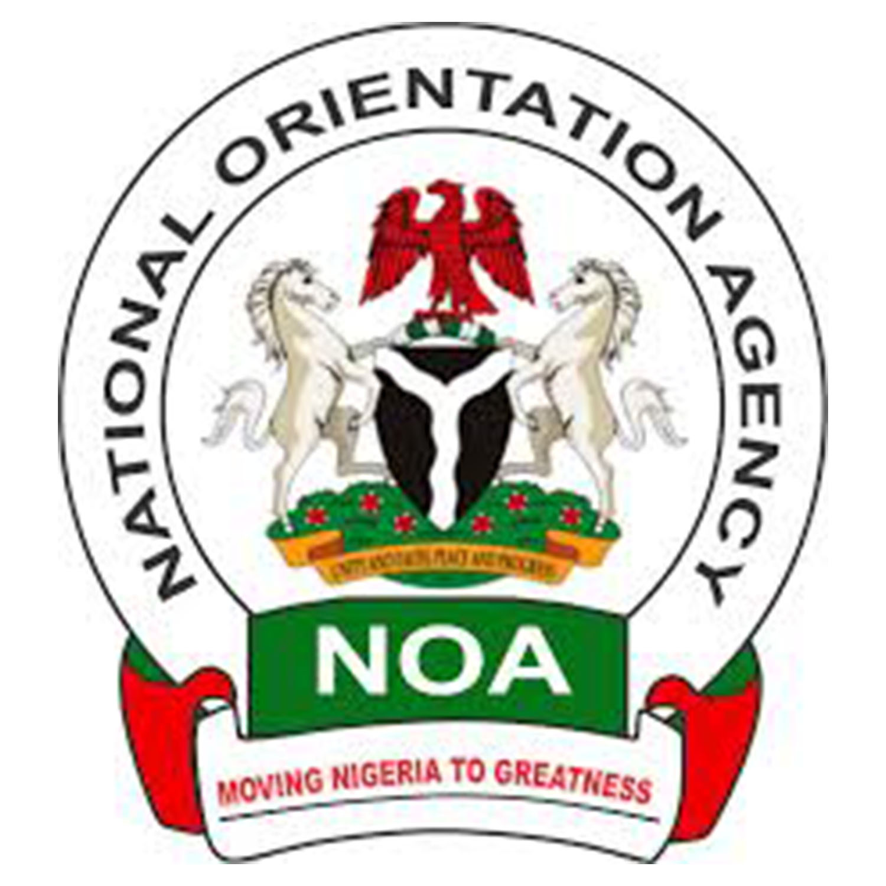
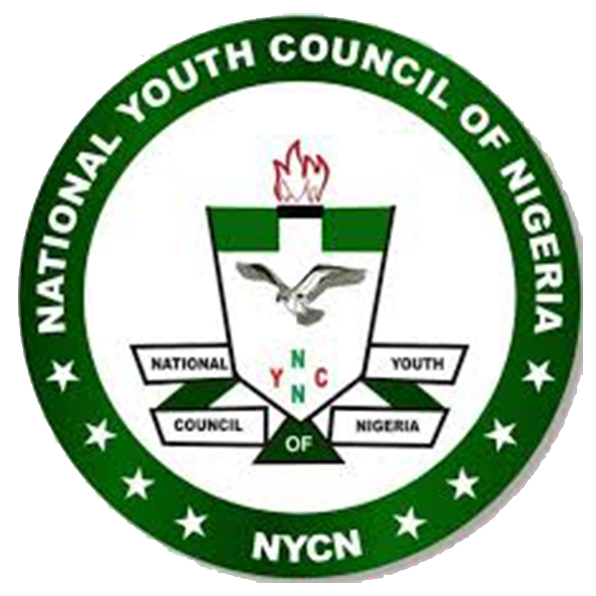
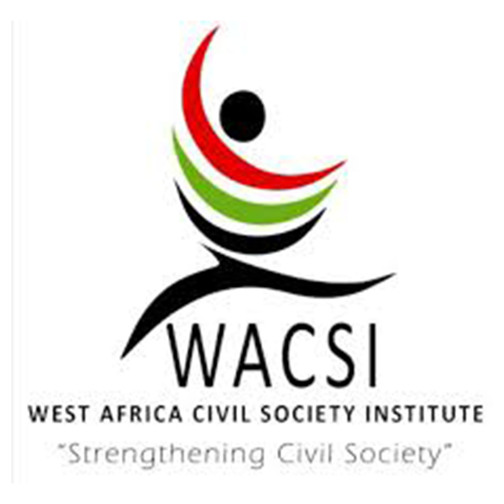
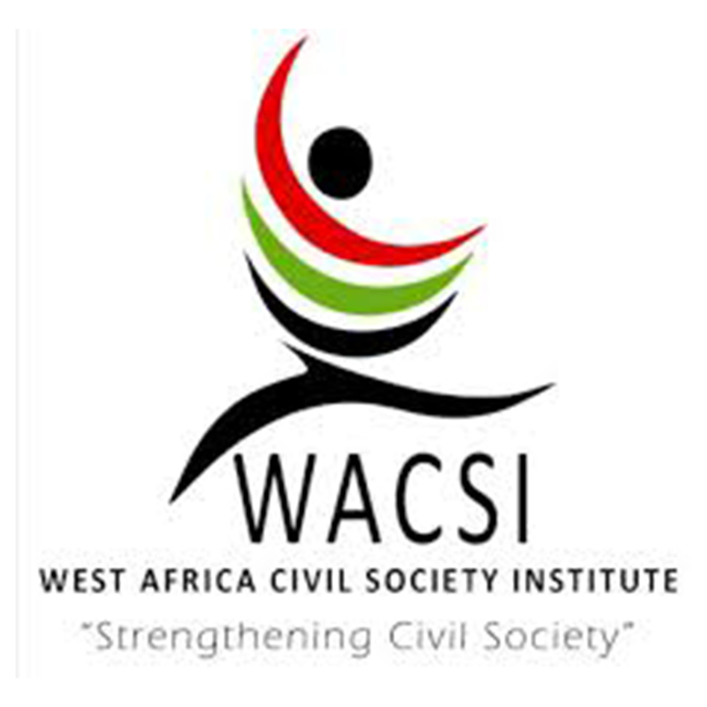

About the Organization
CONGOs was founded in the year 2010 following the observed poor representation of NGOs in the state’s affairs and none coordination of their activities. The then Special Assistant on NGOs to the Executive Governor of Edo State, Comrade Adams Oshiomhole, Hon (Mrs.) Isimeme Whyte initiated the idea to form a coalition of NGOs following this observation. She convened a meeting of heads of NGOs in the state and initiated the idea of a coalition. The first Technical Committee meeting was presided over by Mrs. Isimeme Whyte. Subsequent stakeholder meetings were held and other technical processes leading up to the coalition coming up with a communiqué which was put together by Aigbe Omoruyi, Mrs. Isimeme Whyte and the late Olaitan Oyerinde. Elections were held eventually and the Conference held its inaugural meeting on 5th May, 2010 with Comrade Austin Osakue as its first elected president. Mrs. Isimeme Whyte also provided the initial funds (N30, 000) for the registration of the Conference. Since then the Conference has had three (3) Executive Committees. The first Executive Committee was headed by the Pioneer President, Comrade Austin Osakue who was succeeded by Comrade Jude Obasanmi who did two tenures and handed over to Hon Destiny Enabulele who led the Conference for about six months before resigning to contest the position of Executive Chairman, Ovia South West Local Government Area. His resignation gave way to a bye - election that saw the emergence of Comrade (Mrs.) Daisy Abiola Igaga in 2017 and re-elected for a second tenure for another three years term in April, 2021.
Our vision
A state in which the civil society will play its primary role of driving development and influencing governance in partnership with public and private sectors
Our mission
To mobilize non state actors in achieving the overall sustainable social economic development through the use of technology, advocacy, research, capacity building, monitoring and evaluation
Our core values

Integrity
Transperency
Accountability
Innovativeness
Collaboration
Selfless Services
Professionalism
Meet our executives

Comrade Abiola Daisy Igaga
The President

Comrade Bartholomew Okoudo
Director of Administration

Emmanuel Nowamagbe Evbuomwan
Director of Finance

Bienose Julia A
Director of Treasury

Ifeoma Robinson
Internal Auditor

Mr Emmanuel Okere
Director of
Monitoring and Evaluation

Comrade Isaac Noble Israel
Director of Program

Mrs Ayere Egheomwanre
Director of Welfare
Oghomwen Osayande
Deputy Director of Welfare
Our Partners
 

 





 
